Lesson 3: Spatial Point Patterns Analysis
Content
- Introducing Spatial Point Patterns
- The basic concepts of spatial point patterns
- 1st Order versus 2nd Order
- Spatial Point Patterns in real world
- 1st Order Spatial Point Patterns Analysis
- Kernel Density Estimation (KDE)
- Network Constrained Kernel Density Estimation (NKDE)
- Temporal Network Kernel Density Estimation (TNKDE)
- 2nd Order Spatial Point Patterns Analysis
- Nearest Neighbour Index
- G-function
- F-function
- K-function
- L-function
Welcome to Lesson 4: Spatial Point Pattern Analysis, a family of spatial statistics specially developed to model and to test distribution of spatial point events.
The lesson proceeding is divided into three main section. First, I will share with you what are real world spatial point events. This is followed by explaining the concepts and methods of 1st-order and 2nd-order spatial point patterns analysis.
What is Spatial Point Patterns
Points as Events
Mapped pattern
- Not a sample
- Selection bias
Events are mapped, but non-events are not
Spatial Point Patterns in Real World
- Distribution of dieses such as dengue fever.
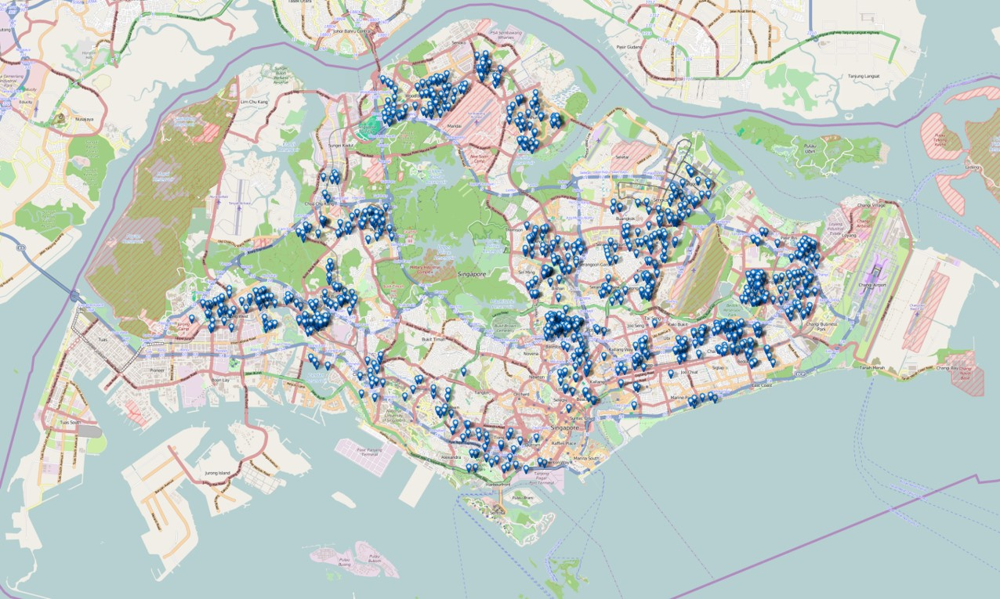
Spatial Point Patterns in Real World
- Distribution of car collisions.
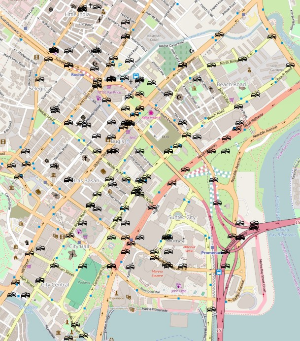
Spatial Point Patterns in Real World
- Distribution of crime incidents.

Spatial Point Patterns in Real World
- Distribution of public services such as education institutions.
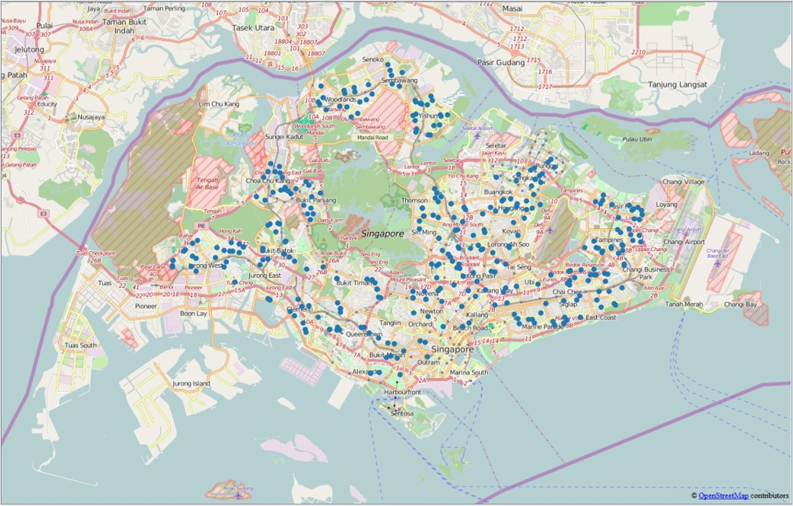
Spatial Point Patterns in Real World
- Locations of the different channel stores.

Spatial Point Patterns in Real World
- Distribution of social media data such as tweets.
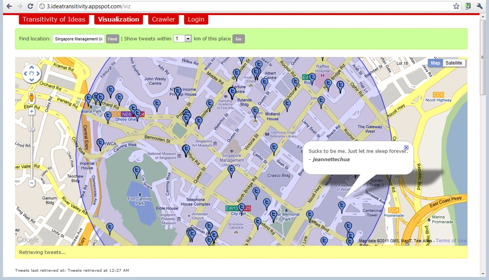
Real World Question
- Location only
- are points randomly located or patterned
- Location and value
- marked point pattern
- is combination of location and value random or patterned
- What is the underlying process?
It is important note that SPPA is exploratory and confirmatory in nature. They are specially developed for describing the spatial point pattern and for confirming the observed patterns statistically. However, they are explanatory nor for prediction.
Points on a Plane
- Classic point pattern analysis
- points on an isotropic plane
- no effect of translation and rotation
- classic examples: tree seedlings, rocks, etc
- Distance
- straight line only
Real world spatial point patterns
- Is this a random distribution?

Real world spatial point patterns
- Is this a random distribution?

Spatial Point Patterns Analysis
- Point pattern analysis (PPA) is the study of the spatial arrangements of points in (usually 2-dimensional) space.
- The simplest formulation is a set X = {x ∈ D} where D, which can be called the study region, is a subset of Rn, a n-dimensional Euclidean space.
- A fundamental problem of PPA is inferring whether a given arrangement is merely random or the result of some process.

Spatial Point Patterns Analysis Techniques
- First-order vs Second-order Analysis of spatial point patterns.

Reference: 11.4 First and second order effects of Intro to GIS and Spatial Analysis
The first-order properties describe the way in which the expected value (mean or average) of the spatial point pattern varies across space (i.e., the intensity of the spatial point pattern). Such properties are usually measured with the so-called quadrat analysis, nearest neighbour index and kernel estimation. Second-order properties describe the covariance (or correlation) between values of the spatial point pattern at different regions in space and are usually measured with the G function, K function and L function. Applied to point event data, both properties could be used to explore the spatial variation in the risk of being victimized by a crime, spatial and space-time clustering of criminal activities, and the raised incidence of criminal activities around point sources, such as robberies around ATM machines, subway entrances and exits, etc.
First-order Spatial Point Patterns Analysis Techniques
- Density-based
- Kernel density estimation
- Quadrat analysis,
- Distance-based
- Nearest Neighbour Index
Basic concept of density-based measures
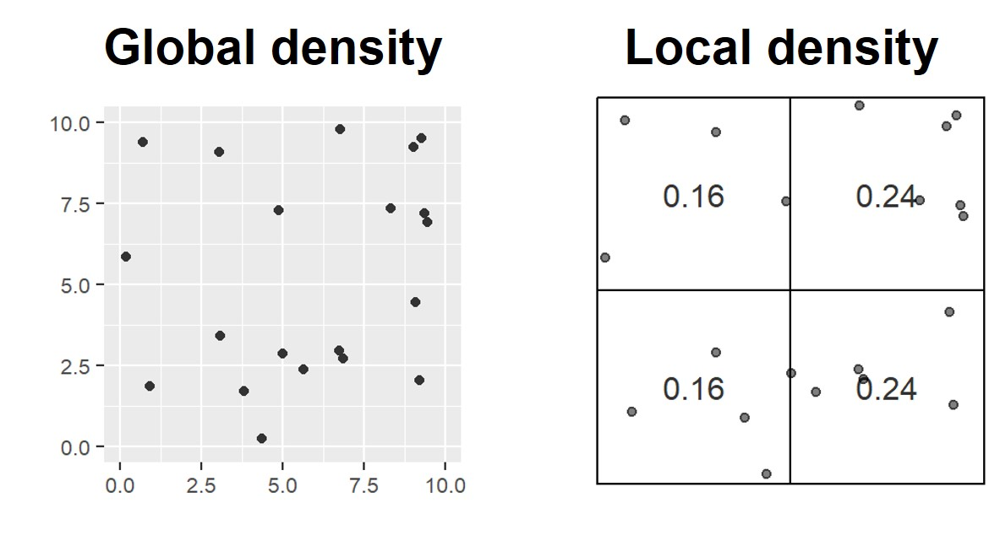
Kernel density estimation (Silverman 1986)
- A method to compute the intensity of a point distribution.
The general formula:
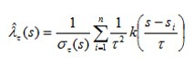
Graphically

KDE Step 1: Computing point intensity

KDE Step 2: Spatial interpolation using kernel function

KDE Map of Childcare Services, Singapore
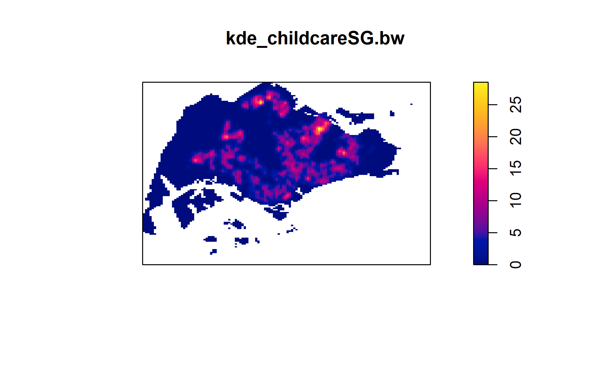
Adaptive Bandwidth
Adaptive schemes adjust itself according to the density of data: - Shorter bandwidths where data are dense and longer where sparse.
- Finding nearest neighbors are one of the often used approaches.
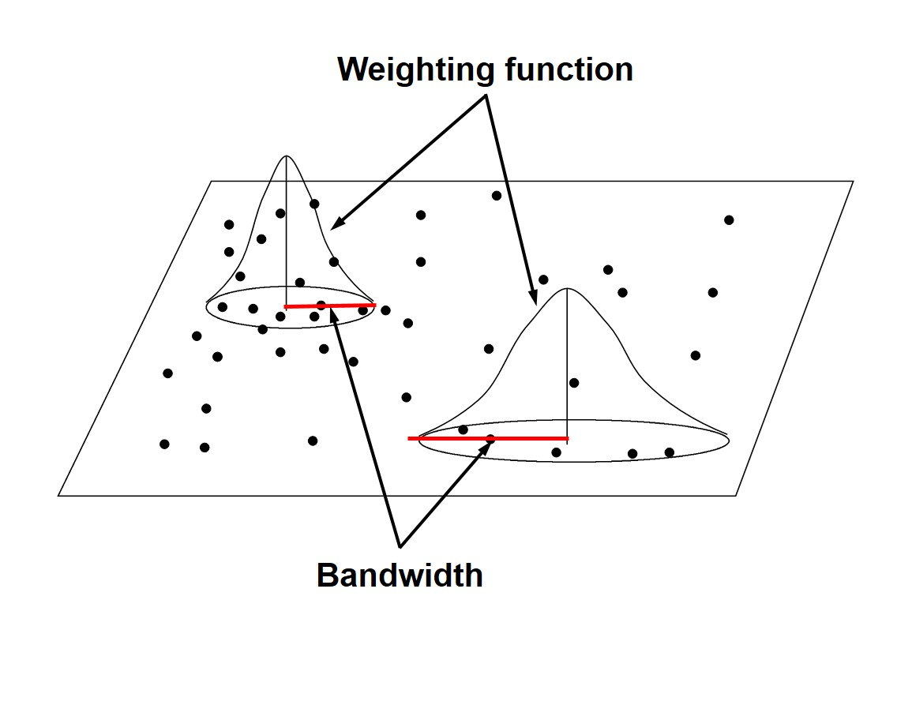
Fixed bandwidth
Might produce large estimate variances where data are sparse, while mask subtle local variations where data are dense.
In extreme condition, fixed schemes might not be able to calibrate in local areas where data are too sparse to satisfy the calibration requirements (observations must be more than parameters).
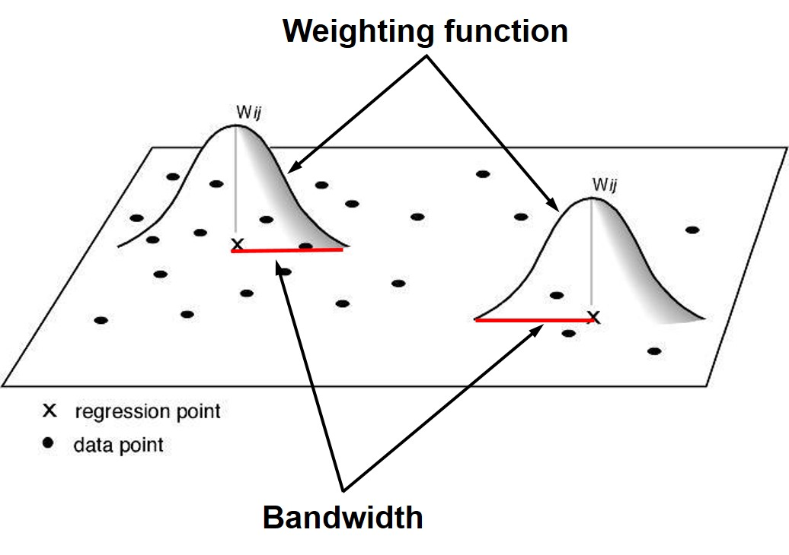
Network Constrained Kernel Density Estimation (NKDE)
Many real world point event are not randomly distributed. Their distribution, on the other hand, are constrained by network such as roads, rivers, and fault lines just to name a few of them.
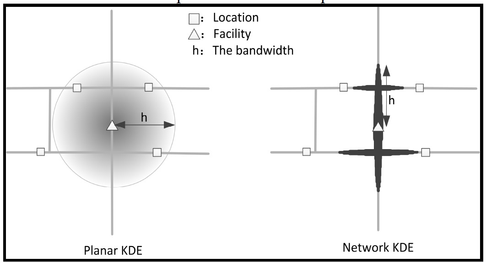
Network Constrained Kernel Density Estimation (NKDE) method
To calculate a Network Kernel Density Estimate (NKDE), it is possible to:
use lixels instead of pixels. A lixel is a linear equivalent of a pixel on a network. The lines of the network are split into lixels according to a chosen resolution. The centres of the lixels are sampling points for which the density will be estimated.
calculate network distances between objects instead of Euclidean distances.
adjust the kernel function to deal with the anisotropic space
NKDE Method
- To perform a NKDE, the events must be snapped on the network. The snapped events are shown here in green.

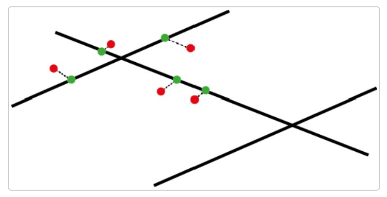
NKDE Method
The mass of each event can be seen as a third dimension and is evaluated by a selected kernel function (K) within a specified bandwidth. The kernel function must satisfy the following conditions:
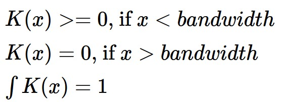
The total mass of an event is 1, and is spread according to the function K within the bandwidth.
In the figure below, we can see that the “influence” of each point is limited within the bandwidth and decreases when we move away from the event.

NKDE Method
With this method, one can evaluate the density of the studied phenomenon at each location on the network. In the figure below, 3 sampling points (s1, s2 and s3) are added in blue.
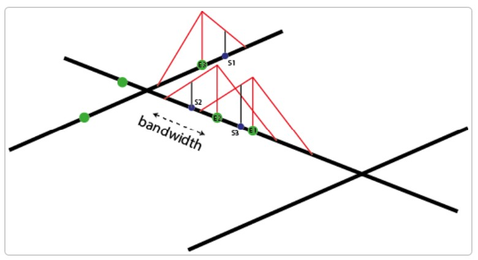
Where S1, S2, and S3 are calculated by using the formulas below:
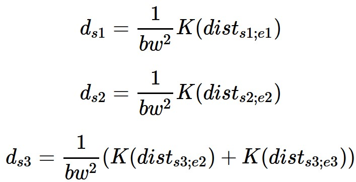
and the general formular will be defined as:
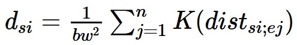
with 𝒅𝑠𝑖 the density estimated at the sample point 𝑠𝒊, 𝒃𝑤 the bandwidth and 𝑒𝑗 an event.
NKDE Method
The proposed kernel functions in the spNetwork package are:


Temporal Network Kernel Density Estimate
Events recorded on a network often have a temporal dimension. In that context, one could estimate the density of events in both time and network spaces.
The spatio-temporal kernel is calculated as the product of the network kernel density and the time kernel density.
For a sample point at location l and time t, the Temporal Network Kernel Density Estimate (TNKDE) is calculated as follows:

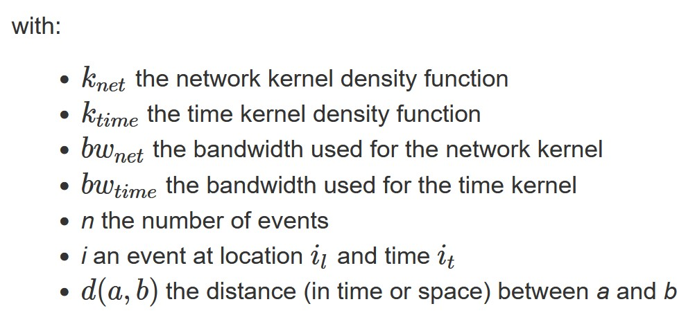
Quadrat Analysis – Step 1
- Divide the study area into subregion of equal size,
- often squares, but don’t have to be.

Quadrat Analysis – Step 2
- Count the frequency of events in each region.

Quadrat Analysis – Step 3
- Calculate the intensity of events in each region.

Quadrat Analysis – Step 4
- Calculate the quadrat statistics and perform CSR test.

Quadrat Analysis – Variance-Mean Ratio (VMR)
For an uniform distribution, the variance is zero, - therefore, we expect a variance-mean ratio close to 0.
For a random distribution, the variance and mean are the same,
- therefore, we expect a variance-mean ratio close to 1.
For a cluster distribution, the variance is relatively large,
- therefore, we expect a variance-mean ratio greater than 1.]
Complete Spatial Randomness (CSR)
CSR/IRP satisfy two conditions: - Any event has equal probability of being in any location, a 1st order effect.
- The location of one event is independent of the location of another event, a 2nd order effect.
Reference: Chapter 12 Hypothesis testing of Intro to GIS and Spatial Analysis

Quadrat Analysis: The interpretation
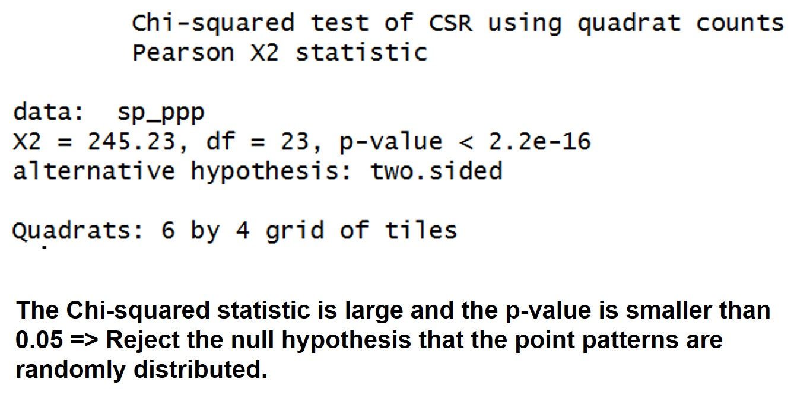
Weaknesses of quadrat analysis
It is sensitive to the quadrat size.
- If the quadrat size is too small, they may contain only a couple of points, and
- If the quadrat size is too large, they may contain too many points.
It is a measure of dispersion rather than a measure of pattern.
It results in a single measure for the entire distribution, so variation within the region are not recognised.
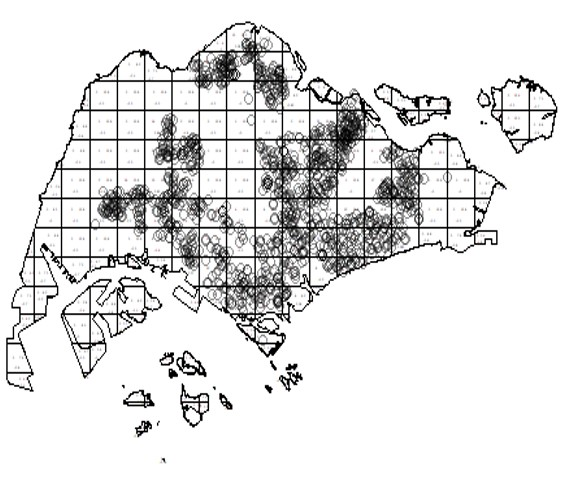
Distance-based: Nearest Neighbour Index
What is Nearest Neighbour?
Direct distance from a point to its nearest neighbour.

Nearest Neighbour Index
The Nearest Neighbour Index is expressed as the ratio of the Observed Mean Distance to the Expected Mean Distance.
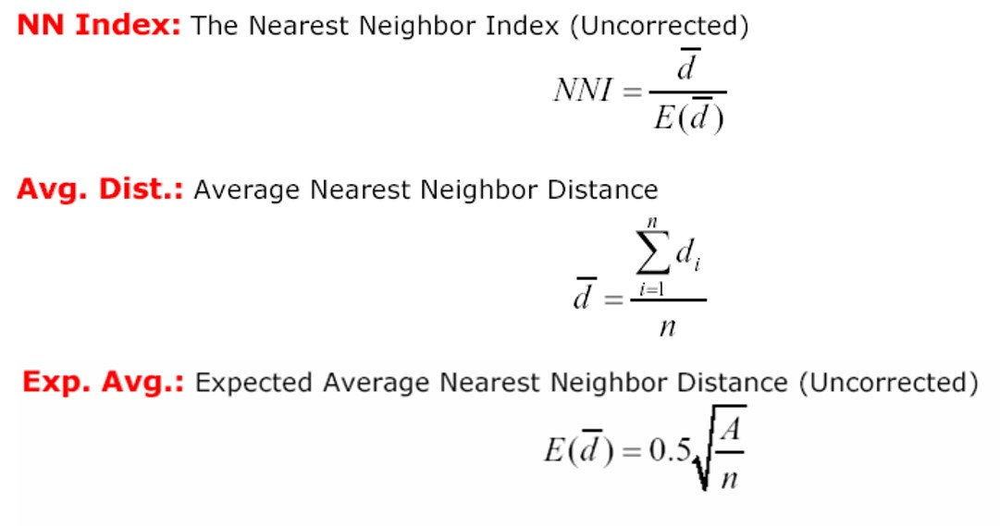
Calculating Nearest Neighbour Index
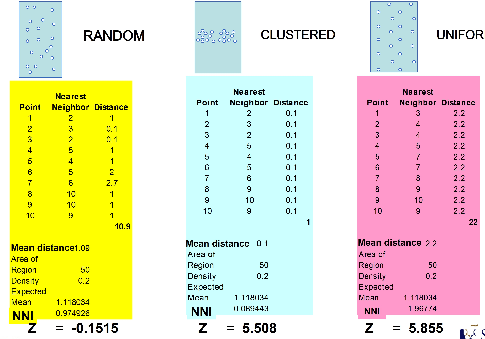
Interpreting Nearest Neighbour Index
The expected distance is the average distance between neighbours in a hypothetical random distribution.
- If the index is less than 1, the pattern exhibits clustering,
- If the index is equal to 1, the patterns exhibits random, and
- If the index is greater than 1, the trend is toward dispersion or competition.
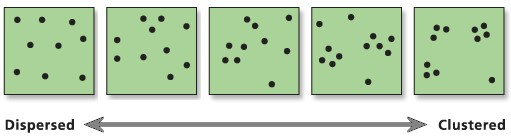
The test statistics
Null Hypothesis: Points are randomly distributed
Test statistics:
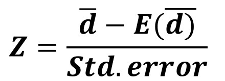
- Reject the null hypothesis if the z-score is large and p-value is smaller than the alpha value.
Interpreting Nearest Neighbour Index

The p-value is smaller than 0.05 => Reject the null hypothesis that the point patterns are randomly distributed.
G function
The formula


Interpretation of G-function
The shape of G-function tells us the way the events are spaced in a point pattern.
Clustered: G increases rapidly at short distance.
Evenness: G increases slowly up to distance where most events spaced, then increases rapidly.

How do we tell if G is significant?
- The significant of any departure from CSR (either cluster or regularity) can be evaluated using simulated “confidence envelopes”

Monte Carlo simulation test of CSR
Perform m independent simulation of n events (i.e. 999) in the study region.
For each simulated point pattern, estimate G(r) and use the maximum (95th) and minimum (5th) of these functions for the simulated patterns to define an upper and lower simulation envelope.
If the estimated G(r) lies above the upper envelope or below the lower envelope, the estimated G(r) is statistically significant.
The significant test of G-function

F function
- Select a sample of point locations anywhere in the study region at random
- Determine minimum distance from each point to any event in the study area.
- Three steps:
Randomly select m points (p1, p2, ….., pn),
Calculate dmin(pi,s) as the minimum distance from location pi to any event in the point patterns, and
Calculate F(d).
The F function formula
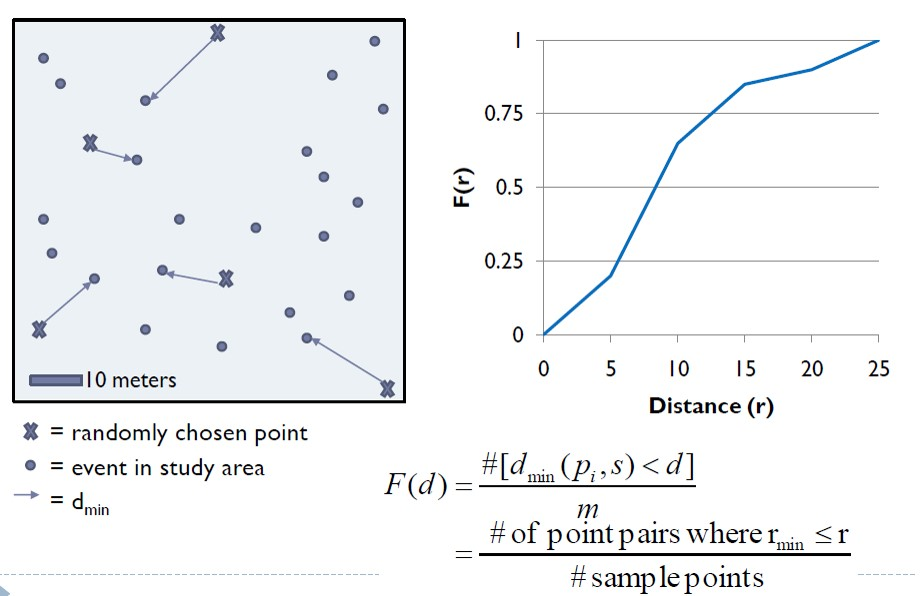
Interpretation of F-function
Clustered = F(r) rises slowly at first, but more rapidly at longer distances.
Evenness = F(r) rises rapidly at first, then slowly at longer distances.
The significant test of F-function
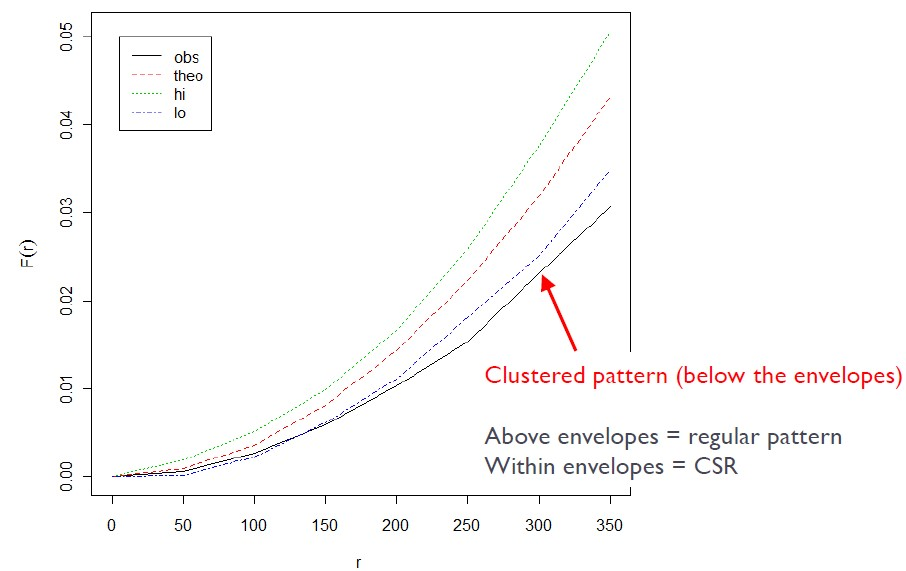
Comparison between G and F

Ripley’s K function (Ripley, 1981)
Limitation of nearest neighbor distance method is that it uses only nearest distance
Considers only the shortest scales of variation.
K function uses more points.
- Provides an estimate of spatial dependence over a wider range of scales.
- Based on all the distances between events in the study area.
- Assumes isotropy over the region.
Calculating the K function
Construct a circle of radius h around each point event(i).
Count the number of other events (j) that fall inside this circle.
Repeat these two steps for all points (i) and sum results.
Increment h by a small amount and repeat the calculation.

K function
The formula:

The K function complete spatial randomness test
K(h) can be plotted against different values of h.
But what should K look like for no spatial dependence?
Consider what K(h) should look like for a random point process (CSR)
- The probability of an event at any point in R is independent of what other events have occurred and equally likely anywhere in R
Interpreting the K function complete spatial randomness test
Under the assumption of CSR, the expected number of events within distance h of an event is:

Compare K(h) to 𝜋ℎ^2
- K(h) < 𝜋ℎ^2 if point pattern is regular
- K(h) > 𝜋ℎ^2 if point pattern is clustered
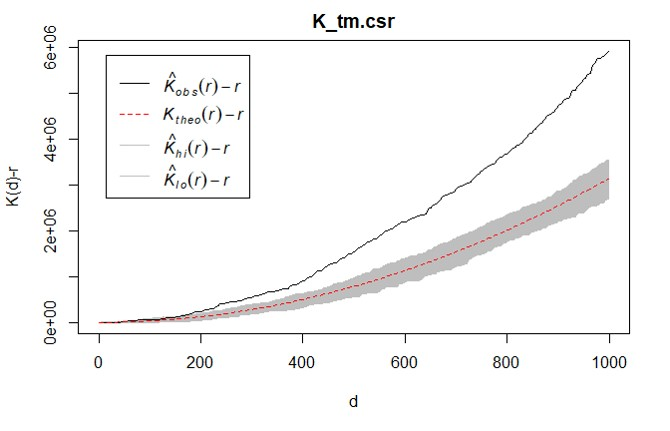
- Above the envelop: significant cluster pattern - Below the envelop: significant regular
- Inside the envelop: CSR
The L function (Besag 1977)
In practice, K function will be normalised to obtained a benchmark of zero.
The formula:
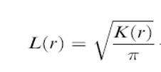
Interpreting the L function complete spatial randomness test
- When an observed L value is greater than its corresponding L(theo)(i.e. red break line) value for a particular distance and above the upper confidence envelop, spatial clustering for that distance is statistically significant (e.g. distance beyond C).
- When an observed L value is greater than its corresponding L(theo) value for a particular distance and lower than the upper confidence envelop, spatial clustering for that distance is statistically NOT significant (e.g. distance between B and C).
- When an observed L value is smaller than its corresponding L(theo) value for a particular distance and beyond the lower confidence envelop, spatial dispersion for that distance is statistically significant. - When an observed L value is smaller than its corresponding L(theo) value for a particular distance and within the lower confidence envelop, spatial dispersion for that distance is statistically NOT significant (e.g. distance between A and B).
- The grey zone indicates the confident envelop (i.e. 95%).

The L function (Besag 1977)
The modified L function
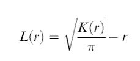
L(r)>0 indicates that the observed distribution is geographically concentrated.
L(r)<0 implies dispersion.
L(r)=0 indicates complete spatial randomness (CRS).

References
- Chapter 11 Point Pattern Analysis of Intro to GIS and Spatial Analysis. Section 11.2, 11.3, 11.3.1 and 11.4
- GIS&T Body of Knowledge AM-07-Point Pattern Analysis
- GIS&T Body of Knowledge AM-08-Kernels and Density Estimation
- Analyzing Patterns in Business Point Data, Directions Magazine March 17, 2005.
- Okabe, Atsuyuki, and Kokichi Sugihara. 2012. “Spatial Analysis Along Networks: Statistical and Computational Methods”. John Wiley & Sons.
- Sugihara, Kokichi, Toshiaki Satoh, and Atsuyuki Okabe. 2010. “Simple and Unbiased Kernel Function for Network Analysis.” In 2010 10th International Symposium on Communications and Information Technologies, 827–32. IEEE.
- Xie, Zhixiao, and Jun Yan. 2008. “Kernel Density Estimation of Traffic Accidents in a Network Space.” Computers, Environment and Urban Systems 32 (5): 396–406. Contents